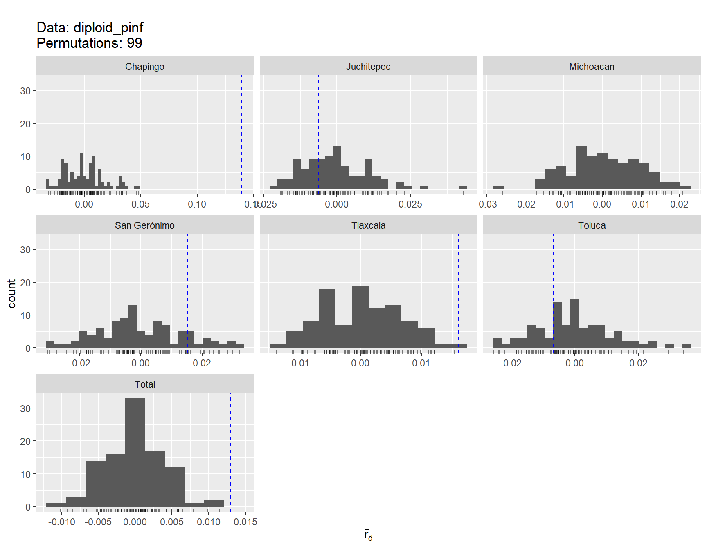
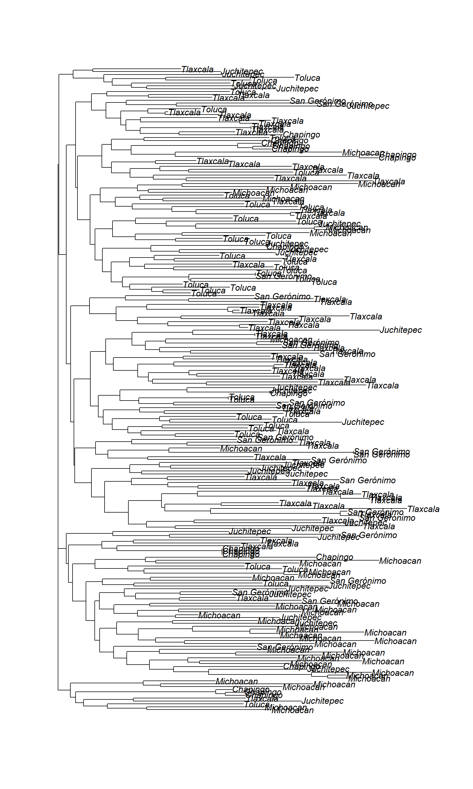

Analyses of microsatellite data in R
Hopefully I have covered what microsatellites markers are by this time. Many R packages are available to analyse microsatellite data. We ll be using R package Poppr to analyze the data from Shakya et al. 2018.
We ll first read the paper and understand what were the objectives of the paper and try to reproduce the work. For this part, We ll work in a group of 3-4 students.
Lets remind ourselves what these terms mean: Diploid individuals, multilocus genotypes, locus/loci, diversity index, index of association, rbarD, Hardy Weinberg Equilibrium, Fst, population structure, DAPC, neighbor joining tree and Mantel’s test.
Download the necessary data
First, we need the microsatellite genotype data which can be downloaded from here. Download MX_pop.csv file to your current working directory.
library(poppr)
P.inf <- read.genalex("MX_pop.csv", ploidy = 4)
P.inf##
## This is a genclone object
## -------------------------
## Genotype information:
##
## 283 original multilocus genotypes
## 517 tetraploid individuals
## 12 codominant loci
##
## Population information:
##
## 1 stratum - Pop
## 11 populations defined -
## Chapingo_2015, Juchitepec_2015, San Gerónimo_2015, ..., Michoacan_2001/2010, Tlaxcala_2007, Toluca_1997Lets look at the missing data
info_table(P.inf, type = "missing", plot = T)
## Locus
## Population D13 G11 Pi04 Pi4B Pi63 Pi70 SSR11 SSR2
## Chapingo_2015 0.3636 . . . . . . .
## Juchitepec_2015 0.4848 . . . . . . .
## San Gerónimo_2015 0.0545 . . . . 0.0182 . .
## Toluca_2015 0.2609 . . . . . . .
## Tlaxcala_2015 0.2424 0.0152 . . . . . .
## Chapingo_2016 0.3333 . . . . . . .
## Juchitepec_2016 0.2456 . . . . . . .
## San Gerónimo_2016 0.1250 . . . . . . .
## Michoacan_2001/2010 0.0526 0.2105 . . . . . .
## Tlaxcala_2007 0.3818 0.1818 . . . . . .
## Toluca_1997 0.1290 . . . . . . .
## Total 0.2398 0.0522 . . . 0.0019 . .
## Locus
## Population SSR3 SSR4 SSR6 SSR8 Mean
## Chapingo_2015 . . . . 0.0303
## Juchitepec_2015 . . . . 0.0404
## San Gerónimo_2015 . 0.0182 . . 0.0076
## Toluca_2015 . . . . 0.0217
## Tlaxcala_2015 0.0152 0.0152 . . 0.0240
## Chapingo_2016 . . . . 0.0278
## Juchitepec_2016 . . . . 0.0205
## San Gerónimo_2016 . . . . 0.0104
## Michoacan_2001/2010 . . . . 0.0219
## Tlaxcala_2007 . . . . 0.0470
## Toluca_1997 . . . . 0.0108
## Total 0.0019 0.0039 . . 0.0250Now instead of working with tetraploids lets work with diploid data.
multiploid2diploid <- function(x, to = 2){
ploidy_tab <- info_table(x, type = "ploidy")
mat_sum <- rowSums(ploidy_tab > to, na.rm = TRUE)
diploid_pinf <- x[mat_sum == 0]
diploid_pinf <- recode_polyploids(diploid_pinf, newploidy = to)
return(diploid_pinf)
}
diploid_pinf <- multiploid2diploid(P.inf, to = 2)
diploid_pinf##
## This is a genclone object
## -------------------------
## Genotype information:
##
## 221 original multilocus genotypes
## 431 diploid individuals
## 12 codominant loci
##
## Population information:
##
## 1 stratum - Pop
## 11 populations defined -
## Chapingo_2015, Juchitepec_2015, San Gerónimo_2015, ..., Michoacan_2001/2010, Tlaxcala_2007, Toluca_1997info_table(diploid_pinf, type = "missing", plot = T)## Locus
## Population D13 G11 Pi04 Pi4B Pi63 Pi70 SSR11 SSR2
## Chapingo_2015 0.3721 . . . . . . .
## Juchitepec_2015 0.7000 . . . . . . .
## San Gerónimo_2015 0.0769 . . . . 0.0256 . .
## Toluca_2015 0.2727 . . . . . . .
## Tlaxcala_2015 0.3171 . . . . . . .
## Chapingo_2016 0.3433 . . . . . . .
## Juchitepec_2016 0.2708 . . . . . . .
## San Gerónimo_2016 0.1667 . . . . . . .
## Michoacan_2001/2010 0.0563 0.2254 . . . . . .
## Tlaxcala_2007 0.4000 0.2000 . . . . . .
## Toluca_1997 0.1667 . . . . . . .
## Total 0.2715 0.0603 . . . 0.0023 . .
## Locus
## Population SSR3 SSR4 SSR6 SSR8 Mean
## Chapingo_2015 . . . . 0.0310
## Juchitepec_2015 . . . . 0.0583
## San Gerónimo_2015 . 0.0256 . . 0.0107
## Toluca_2015 . . . . 0.0227
## Tlaxcala_2015 0.0244 . . . 0.0285
## Chapingo_2016 . . . . 0.0286
## Juchitepec_2016 . . . . 0.0226
## San Gerónimo_2016 . . . . 0.0139
## Michoacan_2001/2010 . . . . 0.0235
## Tlaxcala_2007 . . . . 0.0500
## Toluca_1997 . . . . 0.0139
## Total 0.0023 0.0023 . . 0.0282Remove locus with high percentage of missing data
diploid_pinf <- missingno(diploid_pinf, type = "loci", cutoff = 0.07)
splitStrata(diploid_pinf) <- ~Region/Year
setPop(diploid_pinf) <- ~Region
diploid_pinf##
## This is a genclone object
## -------------------------
## Genotype information:
##
## 221 original multilocus genotypes
## 431 diploid individuals
## 11 codominant loci
##
## Population information:
##
## 2 strata - Region, Year
## 6 populations defined -
## Chapingo, Juchitepec, San Gerónimo, Toluca, Tlaxcala, MichoacanTable 2. Diversity summary by region
# Corrected simpson diversity index
uSimp <- function(x){
lambda <- vegan::diversity(x, "simpson")
x <- drop(as.matrix(x))
if (length(dim(x)) > 1){
N <- rowSums(x)
} else {
N <- sum(x)
}
return((N/(N-1))*lambda)
}
unbiased <- poppr(diploid_pinf, uSimp = uSimp)
unbiased <- unbiased[, c(1,2,3,4,9,10,11)]
colnames(unbiased) <- c("Region", "N", "MLG", "eMLG", "E5", "Corrected lambda", "Hexp")
unbiased <- unbiased[c(6,1,4,3,2,5), ]
rownames(unbiased) <- NULL
unbiased## Region N MLG eMLG E5 Corrected lambda Hexp
## 1 Michoacan 71 43 29.9 0.571 0.956 0.548
## 2 Chapingo 110 17 11.2 0.642 0.824 0.449
## 3 Toluca 46 38 37.3 0.853 0.987 0.453
## 4 San Gerónimo 45 22 22.0 0.603 0.913 0.553
## 5 Juchitepec 68 28 22.0 0.665 0.936 0.569
## 6 Tlaxcala 91 76 41.1 0.913 0.996 0.571Table 3. rbarD and Hardy-Weinberg equilibrium
ia_Pinf <- poppr(diploid_pinf, clonecorrect = TRUE, strata = ~Region, sample = 99, quiet = TRUE)
ia_Pinf <- ia_Pinf[,c(1:3,13:14)]
colnames(ia_Pinf) <- c("Region", "N", "MLG", "rbarD", "P-value")
ia_Pinf## Region N MLG rbarD P-value
## 1 Chapingo 17 17 0.13903 0.01
## 2 Juchitepec 28 28 -0.00623 0.76
## 3 San Gerónimo 22 22 0.01519 0.11
## 4 Toluca 38 38 -0.00664 0.69
## 5 Tlaxcala 76 76 0.01604 0.02
## 6 Michoacan 43 43 0.01019 0.14
## 7 Total 224 221 0.01302 0.01Hardy Weinberg Equilibrium
library(pegas)
diploid_pinf_cc <- clonecorrect(diploid_pinf)
hwe_per_pop <- seppop(diploid_pinf_cc) %>% lapply(hw.test, B = 100)
per_pop_mat <- sapply(hwe_per_pop, "[", i = TRUE, j = 3)
alpha <- 0.05
per_pop_mat[per_pop_mat > alpha] <- 1
library(lattice)
hwe_plot <- levelplot(per_pop_mat, xlab = "Locus", ylab = "Population")
num_loci_hwe <- per_pop_mat
num_loci_hwe[num_loci_hwe != 1] <- 0
num_loci_hwe <- colSums(num_loci_hwe)
ia_Pinf <- ia_Pinf[-7, ]
ia_Pinf <- cbind(ia_Pinf, num_loci_hwe)
ia_Pinf <- ia_Pinf[c(6,1,4,3,2,5), ]
rownames(ia_Pinf) <- NULL
colnames(ia_Pinf)[6] <- "Loci under HWE"
ia_Pinf## Region N MLG rbarD P-value Loci under HWE
## 1 Michoacan 43 43 0.010185614 0.14 5
## 2 Chapingo 17 17 0.139028170 0.01 6
## 3 Toluca 38 38 -0.006641278 0.69 7
## 4 San Gerónimo 22 22 0.015188555 0.11 9
## 5 Juchitepec 28 28 -0.006226974 0.76 11
## 6 Tlaxcala 76 76 0.016042513 0.02 7Table 4. Pairwise FST
diploid_pinf_cc <- clonecorrect(diploid_pinf)
library(strataG)
gen2gtype <- function (x) {
gen.mat <- genind2df(x, usepop = TRUE, oneColPerAll = TRUE)
strata <- x@strata
rownames(strata) <- rownames(gen.mat)
x@strata <- strata
gen.mat[gen.mat == "NA"] <- NA
has.pop <- !is.null(x@pop)
df2gtypes(x = gen.mat, ploidy = x@ploidy[1], id.col = NULL,
strata.col = if (has.pop)
1
else NULL, loc.col = if (has.pop)
2
else 1,
schemes = x@strata, other = other(x))
}
diploid_pinf_cc.g <- gen2gtype(diploid_pinf_cc)
pairwise_fst <- pairwiseTest(diploid_pinf_cc.g, stats = "fst", nrep = 100)##
## <<< gtypes created on 2019-10-31 19:24:03 >>>
## 2019-10-31 19:24:04 : Pairwise tests : 100 permutations
## 2019-10-31 19:24:04 : Chapingo v. Juchitepec
## 2019-10-31 19:24:04 : Chapingo v. Michoacan
## 2019-10-31 19:24:05 : Chapingo v. San Gerónimo
## 2019-10-31 19:24:05 : Chapingo v. Tlaxcala
## 2019-10-31 19:24:05 : Chapingo v. Toluca
## 2019-10-31 19:24:06 : Juchitepec v. Michoacan
## 2019-10-31 19:24:06 : Juchitepec v. San Gerónimo
## 2019-10-31 19:24:06 : Juchitepec v. Tlaxcala
## 2019-10-31 19:24:07 : Juchitepec v. Toluca
## 2019-10-31 19:24:07 : Michoacan v. San Gerónimo
## 2019-10-31 19:24:08 : Michoacan v. Tlaxcala
## 2019-10-31 19:24:08 : Michoacan v. Toluca
## 2019-10-31 19:24:08 : San Gerónimo v. Tlaxcala
## 2019-10-31 19:24:09 : San Gerónimo v. Toluca
## 2019-10-31 19:24:09 : Tlaxcala v. Toluca
##
## Population structure results:
## pair.label Fst Fst.p.val
## 1 Chapingo (17) v. Juchitepec (28) 0.05933588 0.00990099
## 2 Chapingo (17) v. Michoacan (43) 0.06152119 0.00990099
## 3 Chapingo (17) v. San Gerónimo (22) 0.06584521 0.00990099
## 4 Chapingo (17) v. Tlaxcala (76) 0.05181373 0.00990099
## 5 Chapingo (17) v. Toluca (38) 0.04356232 0.00990099
## 6 Juchitepec (28) v. Michoacan (43) 0.06805726 0.00990099
## 7 Juchitepec (28) v. San Gerónimo (22) 0.05353811 0.00990099
## 8 Juchitepec (28) v. Tlaxcala (76) 0.04262064 0.00990099
## 9 Juchitepec (28) v. Toluca (38) 0.06661917 0.00990099
## 10 Michoacan (43) v. San Gerónimo (22) 0.11561847 0.00990099
## 11 Michoacan (43) v. Tlaxcala (76) 0.10420317 0.00990099
## 12 Michoacan (43) v. Toluca (38) 0.10782517 0.00990099
## 13 San Gerónimo (22) v. Tlaxcala (76) 0.01159181 0.02970297
## 14 San Gerónimo (22) v. Toluca (38) 0.07121965 0.00990099
## 15 Tlaxcala (76) v. Toluca (38) 0.06161425 0.00990099fst_mat <- pairwise_fst$pair.mat$Fst
fst_mat[upper.tri(fst_mat)] <- t(fst_mat)[upper.tri(fst_mat)]
fst_mat[is.na(fst_mat)] <- 0
library(reshape2)
fst_mat[upper.tri(fst_mat)] <- NA
lower_tri <- melt(fst_mat, na.rm = TRUE)
library(ggplot2)
ggheatmap <- ggplot(lower_tri, aes(x = Var1, y = Var2, fill = value)) + geom_tile(color = "white") +
scale_fill_gradient(low = "green", high = "red" , space = "Lab", name="Pairwise FST") + theme_minimal() +
theme(axis.text.x = element_text(angle = 90, vjust = 1, size = 12, hjust = 1)) + coord_fixed() +
labs(x = "Population", y = "Population") +
theme(axis.text.y = element_text(size = 12)) +
theme(axis.title = element_text(size = 12)) +
geom_text(aes(label = round(value, 2)))
ggheatmapTable 5. Analysis of molecular variance
repeat_length <- c(2, 2, 2, 3, 3, 2, 2, 2, 2, 2, 2)
bruvodist <- bruvo.dist(clonecorrect(diploid_pinf), replen = repeat_length)
amv <- poppr.amova(diploid_pinf,
hier = ~Region,
clonecorrect = TRUE,
dist = bruvodist,
within = F)
myamv <- amv$results
rownames(myamv) <- c("Between regions", "Within regions", "Total")
myamv <- cbind(myamv, amv$componentsofcovariance$`%`)
colnames(myamv) <- c("df", "SS", "MSS", "% variance")
myamv## df SS MSS % variance
## Between regions 5 4.391361 0.8782721 10.11364
## Within regions 218 38.498885 0.1766004 89.88636
## Total 223 42.890246 0.1923329 100.00000Fig 2. Neighbor joining tree
repeat_length <- c(2, 2, 2, 3, 3, 2, 2, 2, 2, 2, 2)
diploid_pinf <- clonecorrect(diploid_pinf)
tree_nj <- bruvo.boot(diploid_pinf, replen = repeat_length,
sample = 99, cutoff = 70, tree = "nj", showtree = FALSE)
plot(tree_nj)
#write.tree(tree_nj, file = "mynj_tree")Lets try make our tree visually attractive and informative
tree_nj <- read.tree("mynj_tree")
strata <- dplyr::data_frame(taxa = indNames(diploid_pinf)) %>% cbind(strata(diploid_pinf))
head(strata)## taxa Region Year
## 1 CHG16 Chapingo 2015
## 2 CHG1 Chapingo 2015
## 3 CHG10 Chapingo 2015
## 4 CHG11 Chapingo 2015
## 5 CHG12 Chapingo 2015
## 6 CHG13 Chapingo 2015tree_nj$tip.label <- as.character(strata$Region)[match(tree_nj$tip.label, strata$taxa)]
plot(tree_nj)
plot.phylo(tree_nj)
mycol <- rep(NA, length(tree_nj$tip.label))
unique(tree_nj$tip.label)## [1] "Michoacan" "Toluca" "Juchitepec" "Tlaxcala"
## [5] "Chapingo" "San Gerónimo"mycol[grep("Chapingo", tree_nj$tip.label)] <- "red"
plot.phylo(tree_nj, tip.color = mycol)mycol[grep("Juchitepec", tree_nj$tip.label)] <- "black"
mycol[grep("San Gerónimo", tree_nj$tip.label)] <- "green"
mycol[grep("Toluca", tree_nj$tip.label)] <- "blue"
mycol[grep("Tlaxcala", tree_nj$tip.label)] <- "orange"
mycol[grep("Michoacan", tree_nj$tip.label)] <- "pink"
#tiff("./mytree.tiff", width = 9, height = 18, res = 300, compression = "zip", unit = "in")
plot(tree_nj, tip.color = mycol, edge.width = 1, font = 1, main = "NJ tree.")
#dev.off()Fig 3. Population STRUCTURE analysis
edited_qmat_list <- readRDS("qmat_list.RData")
library(mypackage)
for (i in 1:length(edited_qmat_list)){
temp_mat <- edited_qmat_list[[i]]
key <- c("Michoacan" = "MICHO", "Chapingo" = "CHA", "Toluca" = "TOLU", "San Gerónimo" = "SG", "Juchitepec" = "JFH", "Tlaxcala" = "TLAX")
temp_mat$orig.pop <- factor(key[temp_mat$orig.pop], ordered = TRUE, levels = key)
edited_qmat_list[[i]] <- temp_mat
}
library(strataG)
#admix_plot(edited_qmat_list[[3]], horiz = F)
structurePlot(edited_qmat_list[[3]], horiz = F)Fig 4. Discriminant Analysis of Principal components
set.seed(999)
P.infx <- xvalDapc(tab(diploid_pinf, NA.method = "mean"), pop(diploid_pinf),
n.pca = 60:70, n.rep = 10,
parallel = "multicore", ncpus = 4L)library(RColorBrewer)
myCol <- brewer.pal(nPop(diploid_pinf), "Dark2") %>% setNames(popNames(diploid_pinf))
scatter.dapc(P.infx$DAPC, col=myCol, clabel = 0.75, pch=15:19, scree.pca = TRUE, scree.da = FALSE, posi.pca = "topright", posi.leg = "topright", legend = F,
cleg = 0.9, inset.solid = 1, xax = 1, yax = 2, cex.lab = 1, cex = 1, solid = 1, cstar = 0)diploid_pinf_no_MCH <- popsub(diploid_pinf, blacklist = "Michoacan")
set.seed(999)
P.infx1 <- xvalDapc(tab(diploid_pinf_no_MCH, NA.method = "mean"), pop(diploid_pinf_no_MCH), n.pca = 60:70, n.rep = 10, parallel = "multicore", ncpus = 4L)scatter.dapc(P.infx1$DAPC, col=myCol, clabel = 0.75, pch=15:19, scree.pca = TRUE, scree.da = FALSE,
posi.pca = "topright", posi.leg = "topright", legend = F,
cleg = 0.9, inset.solid = 1, xax = 1, yax = 2, cex.lab = 1, cex = 1, solid = 1, cstar = 0)Fig 5. Isolation by distance (Mantel’s test)
lat_lon <- read.csv("Dgeo_MX.csv")
colnames(lat_lon) <- c("name", "lat", "lon")
source("GeoDistanceInMetresMatrix.R")
geodist_mat <- GeoDistanceInMetresMatrix(lat_lon) / 1000
geodist_mat <- as.dist(geodist_mat)
new_fst_mat <- readRDS("new_fst_mat.RData")
fstdist_mat <- as.dist(new_fst_mat)
plot(geodist_mat, fstdist_mat, xlab = "Geographical distance (km)", ylab = "Genetic distance (FST)",
pch = 19, bg = "black", cex.lab = 1.5, cex.axis = 1.5, font.lab = 2,
font = 2, family = "Microsoft Sans Serif")
abline(lm(fstdist_mat~geodist_mat))summary(lm(fstdist_mat~geodist_mat))##
## Call:
## lm(formula = fstdist_mat ~ geodist_mat)
##
## Residuals:
## Min 1Q Median 3Q Max
## -0.045566 -0.013234 0.002951 0.014523 0.029325
##
## Coefficients:
## Estimate Std. Error t value Pr(>|t|)
## (Intercept) 4.530e-02 8.989e-03 5.040 0.000227 ***
## geodist_mat 1.169e-04 4.028e-05 2.903 0.012340 *
## ---
## Signif. codes: 0 '***' 0.001 '**' 0.01 '*' 0.05 '.' 0.1 ' ' 1
##
## Residual standard error: 0.02177 on 13 degrees of freedom
## Multiple R-squared: 0.3933, Adjusted R-squared: 0.3466
## F-statistic: 8.426 on 1 and 13 DF, p-value: 0.01234